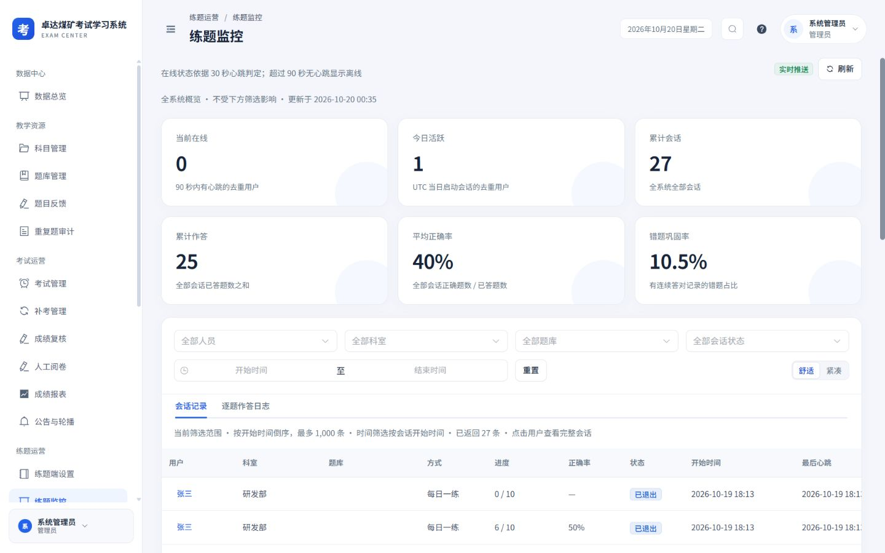
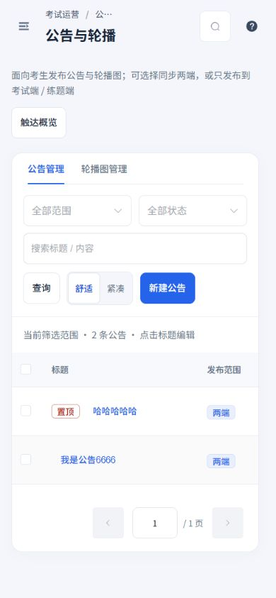
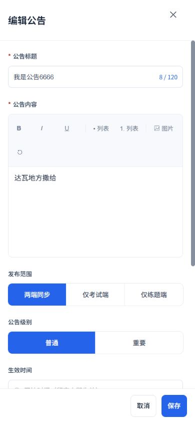
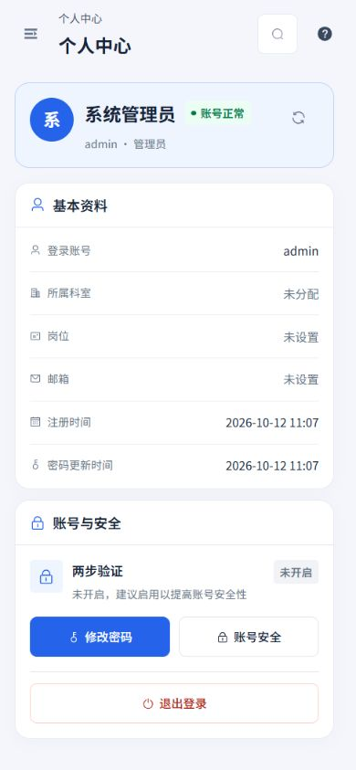
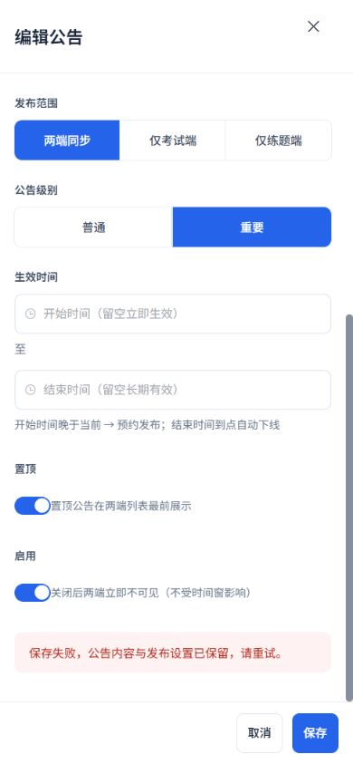
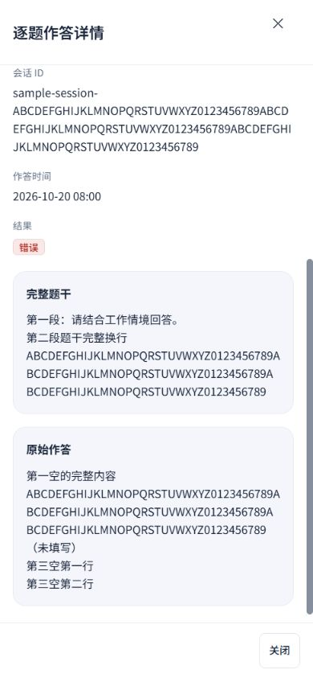
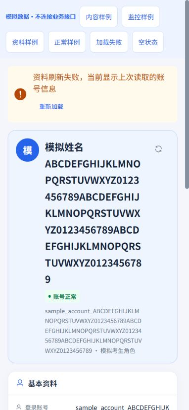
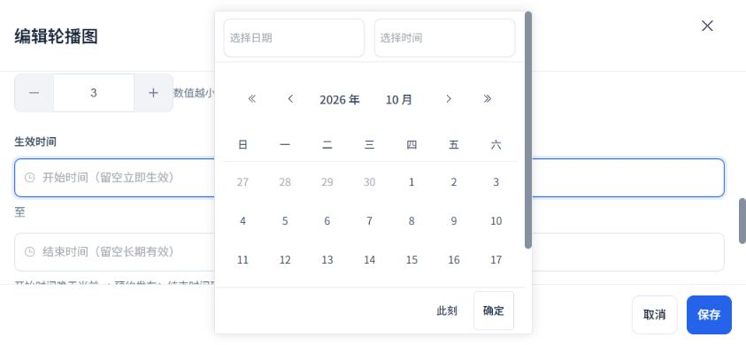

2026-10-20 · Workbuddy 01 · 本轮范围：公告与轮播、练题监控、个人中心
内容编辑有恢复，监控详情可完整阅读
延续白侧栏、浅灰蓝底、蓝色操作与16 px卡片，补齐三页桌面、手机及详情设计。保留原发布范围、时间窗、富文本与图片能力、权限、实时推送及账号安全规则。
本轮实现
- 公告与轮播标题可直接进入编辑，手机无需横滑寻找末列操作。加载和未知数量独立显示，分页加载期间不展示0条。公告正文及轮播图片保存失败均保留填写，错误就地显示。
- 确认、保存和批量请求期间阻止重复操作，锁定筛选、选择、分页和页签。保留原有确认流程，批量失败保留选择；删除末页后回到有效页。轮播上传期间锁定关闭与保存，上传失败保留旧地址。
- 编辑抽屉手机全屏、时间单列、图片上下布局；发布范围、富文本工具、数值加减及底部按钮至少44 px。日期弹层保留日历和时间输入，在横屏视口内滚动并固定确认。触达弹窗增加关闭入口，嵌套页签使用独立标识。
- 练题监控点击用户可查看完整会话或逐题作答。长题干、题库、标识与答案保留换行，多空答案逐项显示并标注空项。详情明确为打开时的记录；概览与明细范围分别表达，会话与日志保留1000 / 5000条上限和不同时间口径，日志不传会话状态筛选。
- 监控保留实时推送与15秒轮询降级，手动刷新防重复；读取失败时不显示旧概览时间。筛选区和范围说明增加统一卡片内边距，手机日期双日历沿用纵向布局。
- 个人中心身份卡16 px圆角，长文本自然换行，手机刷新及安全操作44 px。重复刷新保护；失败说明当前为上次资料，认证层清空账号时提供登录入口，不再提示刷新成功。
实际应用
以下来自本地实际应用和接口。仅查看列表、打开详情与编辑后取消；未提交发布、删除、上传或修改账号安全设置。









隔离长内容与异常场景
以下使用实际页面组件和独立模拟接口；数据与失败均为模拟，不连接业务接口。保存测试仅触发模拟失败。








验证范围
320×740、390×844、844×390、1440×900四种屏幕，41组布局测量，覆盖实际三页、公告和轮播编辑、两类监控详情、触达弹窗、长资料与异常状态。页面无横向溢出，长内容及表格局部滚动；手机抽屉、工具和发布范围按钮至少44 px，横屏日期确认可见。
9个相关测试文件、129项回归通过，覆盖保存与上传保护、批量确认取消、失败恢复、末页回退、监控范围及详情、个人资料和原账号安全能力；类型检查、设计覆盖与生产构建通过。
本报告记录本轮本地实现与验证范围，历史验收记录保留在总目录。